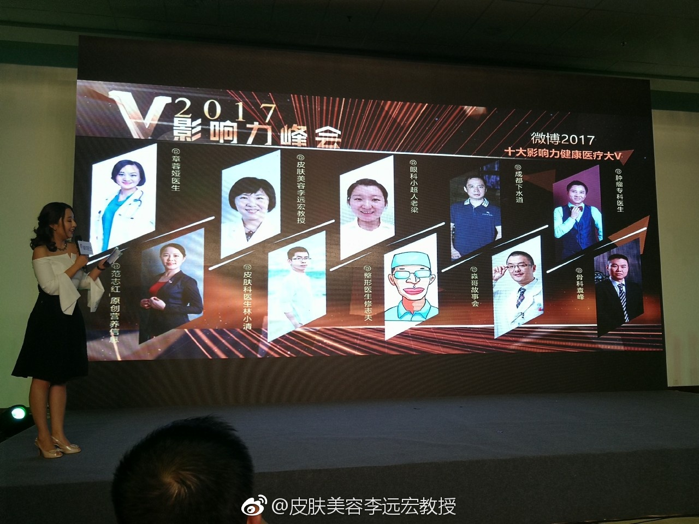

@皮肤美容李远宏教授:爱我的人儿啊，请允许我鸡冻的在这个时刻，再晒一下获奖的照片吧。与@章蓉娅医生 @范志红_原创营养信息 @皮肤科医生林小清 @眼科小超人老梁 @整形医生修志夫 @成都下水道 @淼哥故事会 @肿瘤专科医生 @骨科医生袁峰 一起，荣幸获得微博2017十大影响力健康医疗大V，希望和所有的医生一起在微博这个平台上，肩负起健康健康科普宣传的使命。 @新浪爱问医生
#姣姣#带隐形牙套前，牙医大概为了防止她戴时间不够，说：“我能从你的牙套上看出你每天戴了多长时间，所以爸爸妈妈没有提醒监督的时候，你也要自己记着戴”我当时在旁听得差点笑出声来。估计牙医这招已经对付过很多小孩子了。后来姣姣疑惑地问我：“妈妈，我觉得大夫在吓唬我呢，那么薄的牙套上，怎么放检测时间的东西？”初中的孩子确实不好忽悠了。